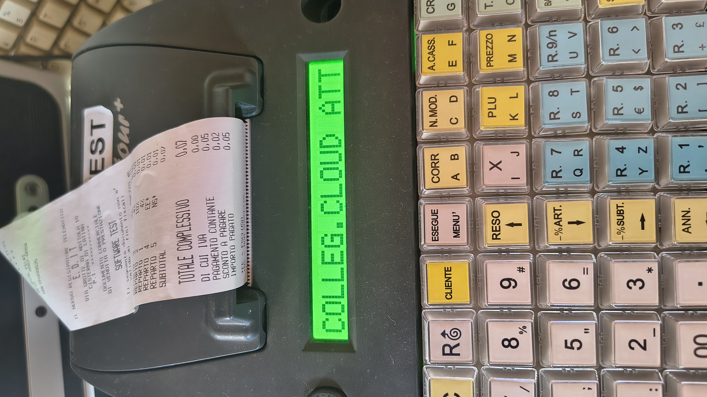
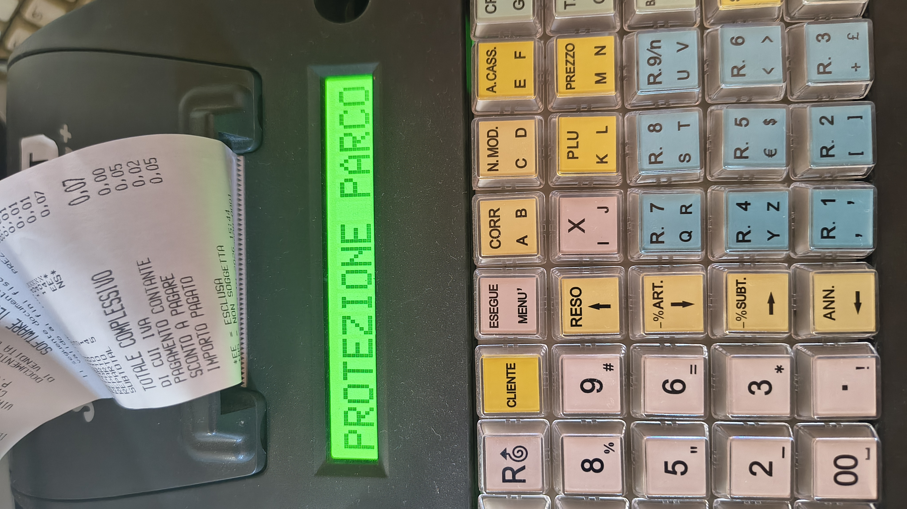
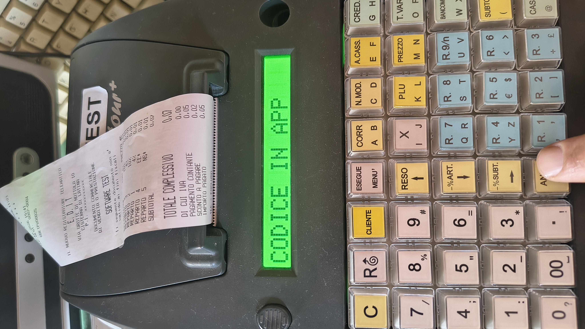

Programmazione Remota
Programmazione Remota
Il registratore può essere programmato a distanza tramite un'applicazione di programmazione remota. La cassa apre una sessione attraverso internet e l'applicazione si collega a essa anche quando si trova su un'altra rete. Entrambi i dispositivi devono essere collegati a internet.
EditRemote è un esempio di applicazione di programmazione remota: per il suo uso consultare la sua guida. Altre applicazioni compatibili possono usare la stessa funzione: in tal caso seguire la documentazione del relativo produttore.
Cosa fa la funzione
La programmazione remota si avvia dal menu 858 MENU. Durante la sessione l'applicazione può:
- leggere la configurazione della cassa ed esportarne una copia;
- inviare alla cassa una configurazione, che viene applicata solo dopo la verifica di integrità;
- leggere le informazioni del giornale elettronico (GE) e gestirne la scadenza e le conversioni. Le operazioni che richiedono una conferma aggiuntiva sono descritte nel capitolo Gestione GE;
- ricevere un aggiornamento del software, vedi Aggiornamento firmware e software.
Modelli e versioni
Il collegamento remoto è disponibile su Smarty evo e Jolly dalla versione 2.7, e su Smarty Plus, ZERO Plus, Smarty Tour+ e Smarty EVO+ dalla versione 23.
Prima di iniziare
- La cassa è collegata a internet e ne è annotata la matricola.
- Il dispositivo con l'applicazione è collegato a internet.
- Se il parco è protetto, il codice di Protezione Parco è disponibile. Per la protezione vedere il capitolo Protezione del parco.
Avvio della sessione sulla cassa
- Eseguire 858 MENU. Per la programmazione remota usare questa funzione, non la 720 MENU usata per il collegamento locale.
- Il display mostra COLLEG.CLOUD ATT. mentre la cassa si collega.

Associazione con l'applicazione
L'associazione dipende dalla presenza della Protezione Parco.
Cassa senza Protezione Parco
- La cassa mostra un codice temporaneo di 5 cifre, per esempio CODICE: 01234. Sui display a due righe compare anche INSERIRE IN APP.
- Inserire il codice nell'applicazione, conservando gli zeri iniziali. Il codice non va digitato sulla tastiera della cassa.
- Completare l'associazione entro 5 minuti.
Cassa con Protezione Parco
- La cassa non genera un codice nuovo: richiede il codice di Protezione Parco già configurato, di 5 cifre.
- Il display alterna PROTEZIONE PARCO e CODICE IN APP. Sui display a due righe compaiono PROT. PARCO e CODICE IN APP.
- Chiedere il codice al tecnico o al gestore autorizzato del parco e inserirlo nell'applicazione entro 5 minuti.


se l'associazione non viene completata entro 5 minuti, il codice scade. Riavviare 858 MENU sulla cassa e usare il nuovo codice.
Durante la sessione
- Dopo un invio, attendere la conferma dell'esito prima di ripetere l'operazione.
- Non spegnere la cassa, non togliere la connessione di rete e non interrompere l'alimentazione mentre un'operazione è in corso.
- Se la verifica di integrità di una configurazione inviata non è superata, la cassa non la applica e mantiene quella attuale.
- La sessione termina quando l'applicazione la chiude, quando il cloud la conclude, quando la funzione viene interrotta sulla cassa premendo il tasto C, oppure dopo 5 minuti senza attività.
Aggiornamento del software da remoto
L'aggiornamento richiede il codice fiscale del tecnico e la partita IVA del laboratorio. Dopo la presa in carico la cassa chiude il collegamento e prosegue con le conferme dell'esercente. Per la procedura completa vedere Aggiornamento firmware e software.
Problemi comuni
| Sintomo | Cosa fare |
|---|---|
| Il collegamento non parte | Verificare la connessione internet sulla cassa e sul dispositivo, poi riavviare 858 MENU. |
| Il codice non viene accettato | Controllare il codice e gli zeri iniziali. Se è scaduto, riavviare 858 MENU e usare quello nuovo. |
| Con Protezione Parco il codice non viene accettato | Verificare il codice di Protezione Parco con il gestore autorizzato. |
| La sessione si chiude da sola | Dopo 5 minuti senza attività la sessione termina: riavviare 858 MENU e ripetere l'operazione. |
| La configurazione non viene applicata | Il file non ha superato la verifica di integrità. Ripetere l'invio dall'applicazione. Se il problema continua, contattare il tecnico. |
Per la configurazione della cassa vedere il capitolo Programmazione.